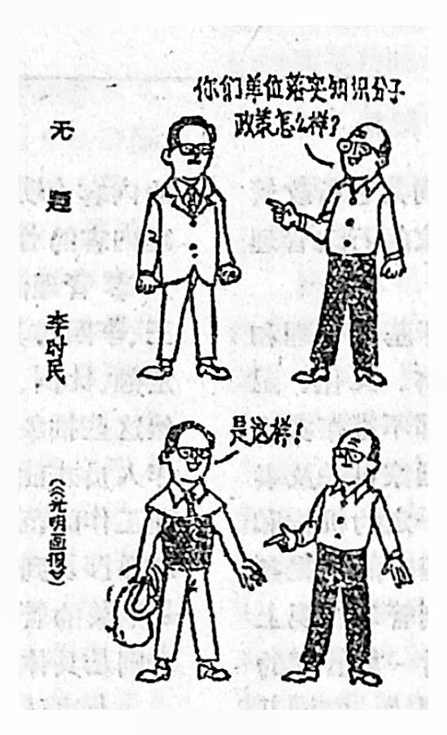

李时民 《人事》1986年第2期（总第5期），第39页（原载《光明日报》）
无题
Untitled
- Text in the drawing
- 你们单位落实知识分子政策怎么样？ / 是这样！
How is your unit implementing the policy on intellectuals? / Like this! - Description
- Two panels. A bald man asks a man in a suit and tie, “How is your unit implementing the policy on intellectuals?” In the second panel the same man, now out of his suit and in a dark, rough sweater, with a hat or bundle held behind him, smiles and answers, “Like this!”
- Note
- 落实知识分子政策, “implementing the policy on intellectuals,” was the early-1980s drive to restore intellectuals' standing, pay and housing. The point of the second panel is unclear. One reading is that the suit was for show and little has changed underneath. If the object in his hand is a hat, it might allude to 摘帽子, the removal of political labels; this is a guess. Credited vertically to 李时民, from Guangming Daily (《光明日报》).
- Artist
- Li Shimin 李时民
- Reprinted from
- 《光明日报》 — Guangming ribao (Guangming Daily)
- Published in
- 《人事》1986年第2期（总第5期）, p. 39
- Themes
- Policy on intellectuals · Talent and its neglect

Cite
Li Shimin, “无题” [Untitled], Renshi (Personnel) 《人事》, 1986, no. 2, p. 39.